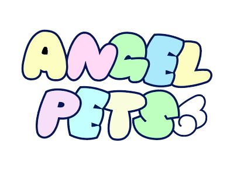
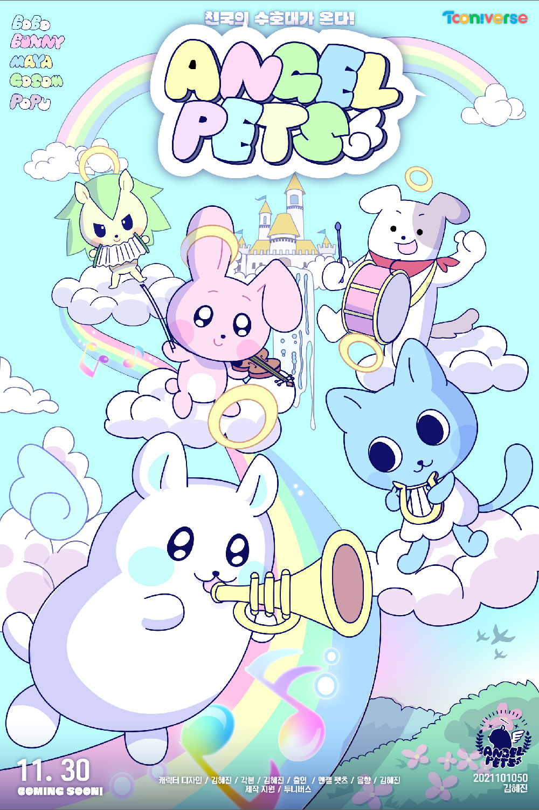

ANGEL PETS! 천국의 수호대
천국으로 간 반려동물들은 어떻게 지낼까? 천국을 지키는 그들이 온다
좌충우돌 수호대의 이야기!

scenario
무지개다리를 건넌 우리 반려동물들은 어떻게 지낼까? 밥은 잘 먹고 있을지, 아프진 않을지..
걱정할 필요 없다. 천국에는 그들을 살피는 ‘엔젤 펫츠’가 있으니까!
한때 누군가의 반려동물이였던 이 동물들은 천사가 된 사후 세계에서 수호대를 꾸려
세상의 모든 고통 받는 동물들을 살펴주고, 동물을 괴롭히는 못된 사람들에게 벌을 내리며,
동물을 떠나 보낸 후 슬퍼하는 사람들에게 위로를 건네기도 한다.
보보와 마야, 버니, 포푸, 그리고 고솜이는 세상을 떠난 후 천사가 되어서도
쉴 틈 없이 바쁜 제 2의 인생을 시작하며 같이 추억을 쌓아나간다.
index
캐릭터 소개
일러스트
컨셉 구상안